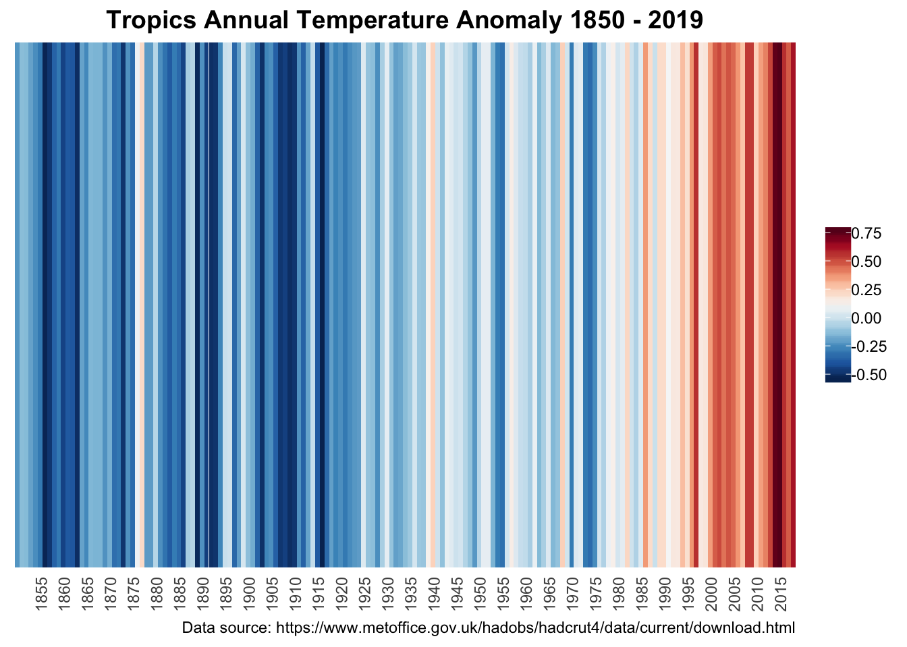

Chapter 9 Generating the visualization
We first check to see if the necessary packages are loaded.
# check if the "tidyverse" and "lubridate" packages are installed
if(!require("tidyverse")) install.packages("tidyverse")
if(!require("lubridate")) install.packages("lubridate")
# load libraries
library(tidyverse)
library(lubridate)
library(RColorBrewer)Then we import the dataset into the project file.
# import tropics annual data
tropics_annual <- read_csv("data/HadCRUT.4.6.0.0.annual_30S_30N.csv")
# the above file was converted to csv from the original downloaded file "data/HadCRUT.4.6.0.0.annual_30S_30N.txt"
# add header to the imported data based on the documentation
names(tropics_annual) <- c("date",
"temp_anomaly",
"lb_bias_uncertainty", "ub_bias_uncertainty",
"lb_measure_sample", "ub_measure_sample",
"lb_coverage", "ub_coverage",
"lb_measure_sample_bias", "ub_measure_sample_bias",
"lb_comb_all", "ub_comb_all")# select only the date and temperature anomaly values for creating our warming stripes visualization
tropics_annual_yr <- select(tropics_annual, date, temp_anomaly)# convert date column to a date object
tropics_annual_yr <- mutate(tropics_annual_yr,date=str_c(date,"01-01",sep="-")%>%ymd())We define the theme for the plot, selecting the color palette. We also set the angle for the x-axis labels to be displaying vertically, at a 90 degrees angle.
# Define the theme for the output plot
theme_strip <- theme_minimal()+
theme(axis.text.y = element_blank(),
axis.line.y = element_blank(),
axis.title = element_blank(),
panel.grid.major=element_blank(),
legend.title = element_blank(),
axis.text.x=element_text(angle=90, hjust = 1),
panel.grid.minor=element_blank(),
plot.title=element_text(size=14,face="bold", hjust = 0.5)
)
col_strip <- brewer.pal(11,"RdBu")
#brewer.pal.infoGenerate the plot and apply the theme to it. We set the scale for x-axis to be 5 years and only to display the Year value of the date.
# create the plot
ggplot(tropics_annual_yr,
aes(x=date,y=1,fill=temp_anomaly))+
geom_tile()+
scale_x_date(date_breaks = "5 years",
date_labels = "%Y",
expand=c(0,0))+
scale_y_continuous(expand=c(0,0))+
scale_fill_gradientn(colors=rev(col_strip))+
guides(fill=guide_colorbar(barwidth = 1))+
labs(title="Tropics Annual Temperature Anomaly 1850 - 2019",
caption="Data source: https://www.metoffice.gov.uk/hadobs/hadcrut4/data/current/download.html")+
theme_strip